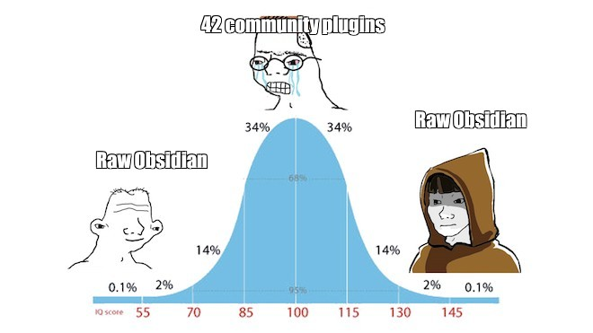
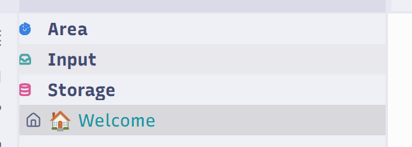
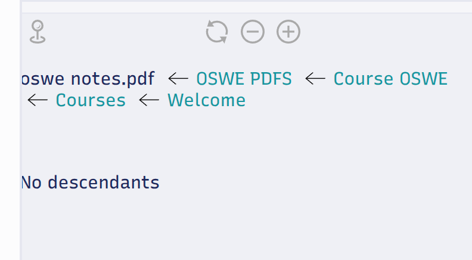

> Obsidian
There is always a need to organize material: something is encountered, saved, and categorized.
Not for the sake of collecting and counting it, but for further generalization and use. Everything flows, everything changes. It is very important to be able to quickly or at least simply retrieve pull a note from your sleeve without spending effort trying to remember it.
I have used Obsidian for about five years. During that time, while trying different approaches, I tried to understand how convenient and applicable it was as:
- A link repository
- A note repository
- A note repository with files (in the same folder)
- A repository of read and saved web pages:
Obsidian Web Clipper[1] - A task tracker:
Task Genius[2] - A PDF reader
- A general knowledge base
- A specialized knowledge base
- A graph database
The result was an indigestible mess of notes.
One of the most recent books on personal knowledge management was 📚 The PARA Method: Simplify, Organise and Master Your Digital Life[3].
I highly recommend it for a general understanding of digital organization.
PARA diagram
flowchart LR
%% Input and capture
I1[Web pages] --> IN[Universal Inbox]
I2[Documents] --> IN
I3[Notes] --> IN
I4[Tasks] --> IN
I5[Snippets] --> IN
I6[Books, lectures, screenshots ...] --> IN
%% Triage
IN --> T{Triage: What is it?}
T -->|An action with an outcome| P[Projects]
T -->|Needs ongoing attention| A[Areas]
T -->|Useful reference or material| R[Resources]
T -->|No longer needed| X[Archive]
%% Execution cycle
P --> EX[Plan/action: tasks, outcomes, deadlines]
A --> MA[Routine: instructions, processes, metrics]
R --> USE[Use: snippets, examples, templates]
%% Reviews
EX --> WR[Monthly review]
MA --> WR
USE --> WR
WR -->|Reformat, promote/demote, clean up| T
%% Archiving flows
P -->|Finished / abandoned| X
A -->|Closed area| X
R -->|Outdated / irrelevant| X
classDef bucket fill:#e7f5ff,stroke:#74c0fc,stroke-width:1px,color:#1c7ed6;
classDef review fill:#fff9db,stroke:#fcc419,stroke-width:1px,color:#e67700;
classDef archive fill:#f8f9fa,stroke:#868e96,stroke-width:1px,color:#495057;
class P,A,R bucket;
class WR review;
class X archive;
A few words about johnnydecimal
I also tried ⚙️ johnnydecimal[4]. It looks like an extension of ⚙️ PARA. The idea is great when you have a library classification system[5] in your pocket. However, the approach has a significant drawback: its structure constantly changes, requiring regular replanning and moving of items. For example, this is the structure that appears when following this system:
D85 Johnny.Decimal/
|-- 10-19 Company administration/
|-- 20-29 Customers, comms, & channels/
| |-- 21 Customers/
| |-- 22 Communications/
| |-- 23 Broadcasting/
| `-- 24 Channels/
|-- 30-39 The Institute/
`-- 40-49 Products/If you try to move the 20-29 Customers, comms, & channels directory together with all its subdirectories, where the 20-29 range is already used, it causes significant time and resource costs due to renumbering. Macros and templates were written, but using them was cumbersome and inconvenient, and portability was low. Emacs fans may enjoy it.
What is actually needed
- Synchronization across all devices (SyncThing)
- A single point for entering information
- Connectivity between all notes through a graph and internal/external links
- A flat structure
- A structure that remains resilient to changes without refactoring
- No need to connect notes through tags
- A transparent, simple organization for quickly getting back into context
How it ended up organized
In the end, it turned into this system:
VaultName
├── 🗂️ Areas
│ ├── 📄 Courses.md
│ ├── 📄 Books.md
│ ├── 📄 Web.md
│ └── 📄 etc.
├── 🗂️ Input
│ ├── 📄 Untitled.md
│ └── 📄 podcasts.md
├── 🗂️ Storage
│ ├── 📄 post about obsidian.md
│ ├── 📄 All You Need Is Kill.md
│ ├── 📄 notes.md
│ ├── 📄 frida.md
│ └── 📄 port 9389.md
│ ├── 📁 Blog
│ │ ├── 📚 Will never read.pdf
│ │ └── 📄 raft-wodlist.txt
│ ├── 📁 LLM
│ │ ├── 🖼️ screen1.png
│ │ ├── 🖼️ screen2.png
│ │ └── 🖼️ screen3.png
└── 📝 Welcome
Unlike ⚙️ PARA, there are no Projects, Resources, or Archive here.
I settled on four entities:
| Entity | Comment |
|---|---|
📝 Welcome |
The entry point, start page, and quick links to Areas; all 🗂️ Areas link to 📝 Welcome |
🗂️ Input |
Incoming items, the raw stream of everything |
🗂️ Storage |
Archive and storage: absolutely everything |
🗂️ Areas |
Long-lived areas of interest |
Why this can be more convenient than PARA
One input point
With ⚙️ PARA, every new item means choosing between Projects/Areas/Resources/Archive. Here there is only one intake point: 🗂️ Input and 🗂️ Storage for long-term storage. 🗂️ Areas are stable and only grow, while 📝 Welcome is the cockpit. This reduces the number of micro-decisions about where something belongs. You can throw everything into 🗂️ Input and sort/delete/enrich it with an LLM once every N days.
Areas instead of “temporary” Projects
Projects are short-lived entities: there are many of them, they constantly appear, and they have to be moved to Archive. 🗂️ Areas remain unchanged, while initiatives live as notes or linked pages. It becomes easier to remember the navigation.
In any case, Projects are more convenient to keep in specialized external tools, while the actual process lives here.
Combining Resources and Archive into Storage
With ⚙️ PARA, you had to choose: “is this still a resource or already an archive?” 🗂️ Storage, on the other hand, is a single store for everything, with no structural requirements. The active/archive distinction is handled by metadata: the archive:true/false tag, the last-access date, etc. No manual moving is necessary.
Storage can feel overloaded with files. We cannot remember everything anyway, and the important part, as shown later, is that notes can simply link to other notes. Unattached notes can only be in 🗂️ Input; if they are in 🗂️ Storage, they are attached to something.
A single overview point
With ⚙️ PARA, the starting point depends on what is currently more active: a project, an area, or a resource. 📝 Welcome is the dashboard: quick links to Areas, nextStep: as a reminder, and tabular views through Bases[6]. This makes the workflow simpler.
nextStep:is a string property in every🗂️ Areasmetadata entry that serves as a reminder of what to do next—just a reminder to yourself.
Maintenance cost
There is no regular regrouping of Projects and Resources. The cycle is a quick triage of 🗂️ Input and adding items to 🗂️ Areas. Less refactoring, more work on the substance.
Plugins
Bell curve

Editor With Slider
A very convenient slider[7] in the bottom-right corner dynamically changes the note width.

Iconic
It can hierarchically color files and folders or add icons to them using regular expressions[8].

Map of Content
Possibly the only plugin[9] I recommend using.
The idea is to list every 🗂️ Areas in a hidden block in 📝 Welcome, so the graph remains connected. You can always find what a note relates to.
> [!info]-
[[Blog]] [[Code]] [[Courses]] [[Entertaiment]] [[Goal]] [[Health]] [[House]] [[daily notes]][[daily notes]] do not belong to 🗂️ Areas, but it is convenient to pin them to the central page too for consistency.
Every note has to be attached to something—the only rule of this entire system. In other words, a file or note has to be mentioned by a note that is transitively connected to 📝 Welcome. It is extremely simple and convenient to use.

LLM
Write your own skills. For example, I have skills for renaming and enriching everything that lives in 🗂️ Input: after dumping a week’s worth of things there and forgetting what they were, an LLM can rename them, follow the links, and add titles, descriptions, and tags.
Summary
- Create three folders at the root:
🗂️ Input,🗂️ Storage,🗂️ Areas, and one📝 Welcomefile - List every
🗂️ Areasin📝 Welcome - Put everything into
🗂️ Input - Everything not deleted from
🗂️ Inputgoes into🗂️ Storage, with a link to🗂️ Areasor another connection to it
I recommend keeping 🗂️ Areas flat and building hierarchy from links inside each Area, using Map of Content, while keeping the main structure in 🗂️ Storage.
Obsidian Web Clipper: https://obsidian.md/clipper ↩︎
Task Genius: https://taskgenius.md/ ↩︎
The PARA Method: Simplify, Organise and Master Your Digital Life: https://isbnsearch.org/isbn/9781668045572 ↩︎
johnnydecimal system: https://johnnydecimal.com/ ↩︎
Library and Bibliographic Classification: https://ru.wikipedia.org/wiki/Библиотечно-библиографическая_классификация ↩︎
More about Bases: https://help.obsidian.md/bases ↩︎
Editor With Slider: https://github.com/MugishoMp/obsidian-editor-width-slider ↩︎
Iconic: https://github.com/gfxholo/iconic ↩︎
Map of Content: https://github.com/Robin-Haupt-1/Obsidian-Map-of-Content ↩︎